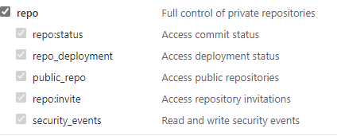

简介
使用hugo搭建个人博客，并结合Github与Travis CI实现自动化集成部署。
本地运行
hugo下载（windows）
检查可用之后，使用命令新建一个网站（不用新建文件夹，hugo会自动建立）：
1
2
|
hugo new site your-site-name
cd your-site-name
|
主题下载
主题是放到themes目录中，一般从hugo themes中找到想要的主题，下载到themes文件夹中。需要修改配置文件中相关配置，名字为文件夹名称。
静态资源位置
静态资源位置一般是在网站目录下的static文件夹中
添加文章
1
2
3
|
hugo new post/first.md
# 该文件会在 content/post/目录下
# 执行编译之后，产生的文件在public目录下
|
运行
1
2
3
4
5
6
7
8
9
10
11
12
13
14
15
16
17
18
19
|
hugo server -D
# 该条命令是本地测试运行，有可能markdown文件的draft标签为true，在真正编译的时候需要把true改为false
# 不然不会显示
hugo
# 就是编译命令 编译结果如下
Start building sites …
| EN
-------------------+-----
Pages | 12
Paginator pages | 0
Non-page files | 0
Static files | 1
Processed images | 0
Aliases | 4
Sitemaps | 1
Cleaned | 0
Total in 76 ms
|
部署
部署我们一般使用两个仓库，一个仓库(blog)用于存放源文件，一个仓库(*.githu.io)用于存放生成的网站静态文件。
存放源文件的仓库会在Travis中使用。
生成github token
前提是仓库已经全部建立，此时我们进入token，生成GITHUB_TOKEN。repo标签内全部选上即可。

结合Travis
前提是仓库已经全部建立，此时我们登录tracis ci，使用github进行登录，然后根据提示选择我们需要的仓库。也就是用于存放源文件的仓库。点击仓库右边的setting按钮。进入之后，在下方Environment Variables中添加变量名为GITHUB_TOKEN（这个随意，不过后面取得时候要注意保持一致）。
添加.travis.yml文件
这里我直接列举我自己得文件，对应改以下就好。
1
2
3
4
5
6
7
8
9
10
11
12
13
14
15
16
17
18
19
20
21
22
23
24
25
26
27
28
29
30
31
32
33
34
35
36
37
38
39
40
41
42
43
44
45
46
47
48
|
language: go
go:
- "1.15" # 指定Golang 1.15
# Specify which branches to build using a safelist
# 分支白名单限制：只有 master 分支的提交才会触发构建
branches:
only:
- master
install:
# 安装最新的hugo
- wget https://github.com/gohugoio/hugo/releases/download/v0.84.0/hugo_0.84.0_Linux-64bit.deb
- sudo dpkg -i hugo*.deb
# 安装主题
- git clone https://github.com/WingLim/hugo-tania.git themes/tania --depth=1
script:
# 运行hugo命令
- hugo
after_script:
# 部署
- cd ./public
- git init
- git config user.name "hearecho"
- git config user.email "1540302560@qq.com"
- git add .
- git commit -m "Update Blog By TravisCI With Build $TRAVIS_BUILD_NUMBER"
# Github Pages
- git push --force --quiet "https://$GITHUB_TOKEN@${GH_REF}" master:master
env:
global:
# Github Pages
- GH_REF: github.com/hearecho/hearecho.github.io
deploy:
provider: pages # 重要，指定这是一份github pages的部署配置
skip-cleanup: true # 重要，不能省略
local-dir: public # 静态站点文件所在目录
# target-branch: master # 要将静态站点文件发布到哪个分支
github-token: $GITHUB_TOKEN # 重要，$GITHUB_TOKEN是变量，需要在GitHub上申请、再到配置到Travis
# fqdn: # 如果是自定义域名，此处要填
keep-history: true # 是否保持target-branch分支的提交记录
on:
branch: master # 博客源码的分支
|
提交与检查
到此时，基本上工作已经完成。提交我们此次更改之后，travis会自动进行build，如果出错，应该是步骤问题。
leetcode 每日一题
请实现一个函数，输入一个整数（以二进制串形式），输出该数二进制表示中 1 的个数。例如，把 9 表示成二进制是 1001，有 2 位是 1。因此，如果输入 9，则该函数输出 2。
解题思路，num与num-1在二进制位进行表示得时候，每次都会在第一个1出现得位置，变得不同，所以我们每次让num与num-1做与运算，直至num<=0
1
2
3
4
5
6
7
8
|
func hammingWeight(num uint32) int {
x := 0
for num > 0 {
num &= num-1
x++
}
return x
}
|